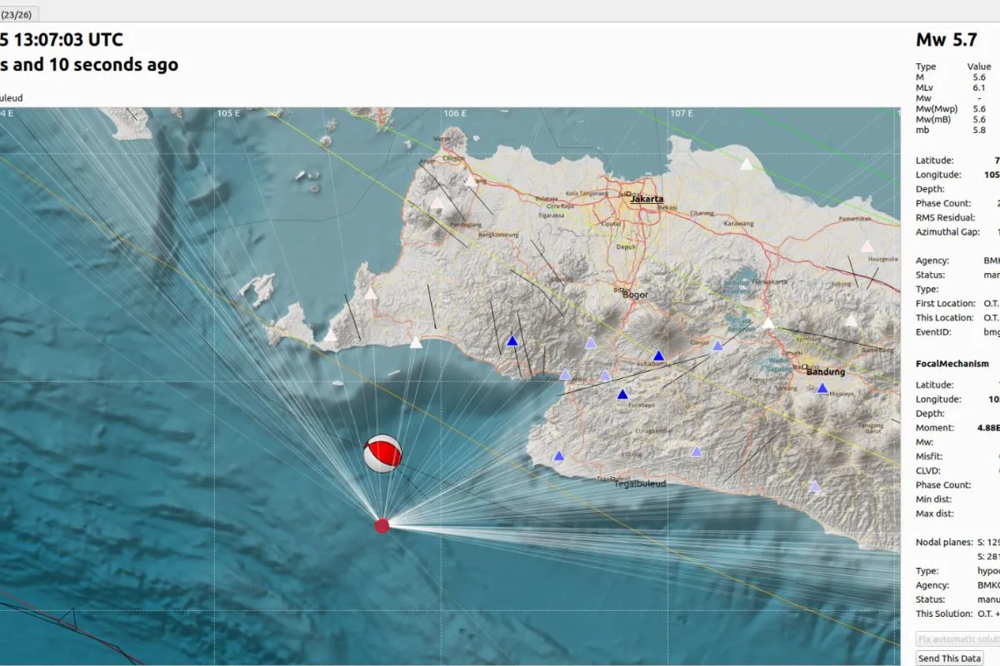

BMKG: Gempa Banten tidak berpotensi tsunami
Jakarta (ANTARA) -
Badan Meteorologi, Klimatologi, dan Geofisika (BMKG) melaporkan gempa yang terjadi di Samudera Hindia Selatan, Banten, tidak berpotensi tsunami.
"Hasil pemodelan menunjukkan bahwa gempa bumi ini tidak berpotensi tsunami," ujar Kepala Pusat Gempabumi dan Tsunami BMKG, Daryono, dalam keterangannya di Jakarta, Minggu.
Sebelumnya, gempa tektonik dengan magnitudo 5,7 melanda wilayah Samudera Hindia Selatan, Banten, Minggu, sekitar pukul 20.07 WIB. Hasil analisis BMKG menunjukkan gempa bumi ini memiliki parameter update dengan magnitudo M5,7.
Episenter gempa bumi terletak pada koordinat 7,63° LS, 105,74° BT, atau tepatnya berlokasi di laut pada jarak 96 Km arah Barat Daya Bayah, Banten, pada kedalaman 43 km.
Daryono mengatakan, memperhatikan lokasi episenter dan kedalaman hiposenternya, gempa bumi yang terjadi merupakan jenis gempa bumi dangkal akibat adanya aktivitas subduksi Lempeng Indo-Australia ke bawah Lempeng Eurasia di selatan Banten.
"Hasil analisis mekanisme sumber menunjukkan bahwa gempa bumi memiliki mekanisme pergerakan naik (thrust fault) yang merupakan cerminan gempa megathrust," kata dia.
Gempa bumi ini, kata Daryono, berdampak dan dirasakan di daerah Surade dengan skala intensitas IV MMI (pada siang hari dirasakan oleh orang banyak dalam rumah, di luar oleh beberapa orang, gerabah pecah, jendela/pintu berderik dan dinding berbunyi).
Kemudian di daerah Pelabuhan Ratu, Bayah, Malimping, Garut, dengan skala intensitas III MMI (getaran dirasakan nyata dalam rumah. Terasa getaran seakan akan truk berlalu).
Lalu, di daerah Bandung, Cilacap, Panimbang dan Cigelis dengan skala intensitas II-III MMI (getaran dirasakan nyata dalam rumah. Terasa getaran seakan akan truk berlalu).
Daerah Serang dan Lembang dengan skala intensitas II MMI (getaran dirasakan oleh beberapa orang, benda-benda ringan yang digantung bergoyang).
"Hingga pukul 20.30 WIB, hasil monitoring BMKG belum menunjukkan adanya aktivitas gempa bumi susulan (aftershock)," katanya
BMKG mengimbau masyarakat agar tetap tenang dan tidak terpengaruh oleh isu yang tidak dapat dipertanggungjawabkan kebenarannya. Kemudian, menghindari dari bangunan yang retak atau rusak diakibatkan oleh gempa.
"Periksa dan pastikan bangunan tempat tinggal anda cukup tahan gempa, ataupun tidak ada kerusakan akibat getaran gempa yang membahayakan kestabilan bangunan sebelum anda kembali ke dalam rumah," kata dia.
Sumber: ANTARALAMPUNG